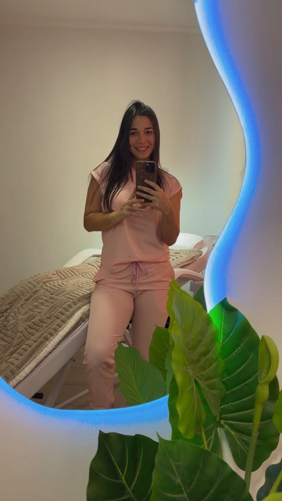

Hay decisiones que cambian una vida para siempre.
Hace algunos años, dejé atrás mi país, mi familia y muchas de las comodidades que conocía. No fue una decisión fácil. Como miles de personas, emigré con una maleta llena de ropa, muchos miedos y un sueño enorme: construir un futuro mejor.
Los primeros meses fueron difíciles. Trabajé en lo que aparecía, aprendí nuevas costumbres y muchas veces dudé si había tomado la decisión correcta. Pero cada desafío me enseñó que los sueños no se abandonan, se construyen paso a paso.
Desde muy joven siempre me apasionó el mundo de la belleza. Descubrí que detrás de un servicio estético no solo existe maquillaje, pestañas, uñas o tratamientos. Existe algo mucho más valioso: la oportunidad de hacer que una persona vuelva a sonreír frente al espejo.
Con esfuerzo, capacitación y muchas horas de trabajo, logré abrir mi propio emprendimiento. Un espacio pensado para que cada mujer se sienta especial, escuchada y valorada.
Hoy, cada clienta que cruza mi puerta no encuentra solamente un servicio de belleza. Encuentra un momento para desconectarse del estrés, para regalarse tiempo, para sentirse hermosa y recordar el gran valor que tiene.
Mi misión es entregar mucho más que un resultado estético. Quiero brindar confianza, cariño, dedicación y ese pequeño momento de paz que todas merecen.
Cada cita es una conversación, una sonrisa compartida, una historia distinta y una oportunidad para demostrar que cuando el trabajo se hace con amor, la diferencia se nota.
Este emprendimiento nació de un sueño que cruzó fronteras, pero hoy crece gracias a la confianza de cada una de esas bellas mujeres que han decidido regalarse un momento para ellas.
Gracias por ser parte de esta historia.
Porque la belleza comienza cuando una mujer vuelve a creer en sí misma, y si puedo aportar un pequeño granito de arena para lograrlo, entonces todo el camino recorrido habrá valido la pena.